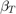
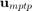
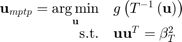
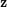
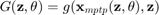
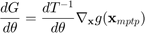

CODES / reliability / iform
Inverse first-order reliability method
Contents
Syntax
- res=CODES.reliability.iform(g,dim,beta) search for the Minimum Performance Target Point (MPTP) at a given beta. The dimension dim of the problem must be specified.
- res=CODES.reliability.iform(...,param,value) uses a list of parameters param and values value (see, parameter table)
Description
For a given target probability of failure associated with a target reliability index , the inverse FORM approach finds the minimum performace target point (MPTP)  by solving the following optimization problem (PMA approach):

For distribution hyper-parameters$\theta$ and deterministic variables , the probabilistic performace measure (PPM) is defined as:

Sensitivities of the PPM are:


Solvers
Currently available solvers:
- 'sqp', matlab fmincon using sqp algorithm
- 'amv', Wu (1984)
- 'cmv', Youn et al. (2003)
- 'hmv', Youn et al. (2003)
Parameters
| param | value | Description |
|---|---|---|
| 'solver' | {'sqp'}, 'amv', 'cmv', 'hmv' | Defines which RIA solver to use, see Solvers. |
| 'Tinv' | function_handle, { [ ] } | An inverse transformation function that transform realizations from a standard gaussian space into the desired space. For example, for an exponential space Tinv=@(u)expinv(normcdf(u),1). |
| 'LS_grad' | logical, {false} | Wether the limit state function g also return gradients with respect to x. |
| 'rel_diff' | positive integer, {1e-5} | Perturbation used for finite difference. |
| 'eps' | positive integer, {1e-4} | Convergence tolerance. |
| 'iter_max' | positive integer, {100} | Maximum number of iterations. |
| 'vectorial' | logical, {false} | Wether the limit state function g is vectorial. |
| 'display' | {'none'}, 'final', 'iter' | Defines the verbose level. |
| 'gz' | function_handle | g as a function of x and z, used for dPPM/dz (see Mini Tutorial for an example). |
| 'dgdz' | function_handle | dg/dz as a function of x and z, used for dPPM/dz (see Mini Tutorial for an example). |
| 'z' | real value | z value, used for dPPM/dz (see Mini Tutorial for an example). |
| 'T' | function_handle | Transformation T as a function of x and theta, used for dPPM/dtheta (see Mini Tutorial for an example). |
| 'dTdx' | function_handle | dT/dx as a function of x and theta, used for dPPM/dtheta (see Mini Tutorial for an example). |
| 'Tinvtheta' | function_handle | Inverse transformation Tinv as a function of u and theta, used for dPPM/dtheta (see Mini Tutorial for an example). |
| 'dTinvdtheta' | function_handle | dTinv/dtheta as a function of u and theta, used for dPPM/dtheta (see Mini Tutorial for an example). |
| 'theta' | real value | theta value, used for dPPM/dtheta (see Mini Tutorial for an example). |
Example
Compute and plot a generalized "max-min" sample
g=@CODES.test.lin; res=CODES.reliability.iform(g,2,2.5); disp(res)
Pf: 0.0062
beta: 2.5000
LS_count: 20
MPTP: [1.7678 1.7678]
uMPTP: [1.7678 1.7678]
PPM: 0.5000
Demonstration
 |
A complete demonstration of the capabilities of the iform function. |
References
- Wu (1984): Wu, Y.-T. (1984). Efficient methods for mechanical and structural reliability analysis and design (safety-index, fatigue, failure). The University of Arizona. link
- Youn et al. (2003): Youn, B. D., Choi, K. K., & Park, Y. H. (2003). Hybrid Analysis Method for Reliability-Based Design Optimization. Journal of Mechanical Design, 125(2), 221. DOI
See also
Copyright © 2015 Computational Optimal Design of Engineering Systems (CODES) Laboratory. University of Arizona.
|
|
Computational Optimal Design of Engineering Systems |

|